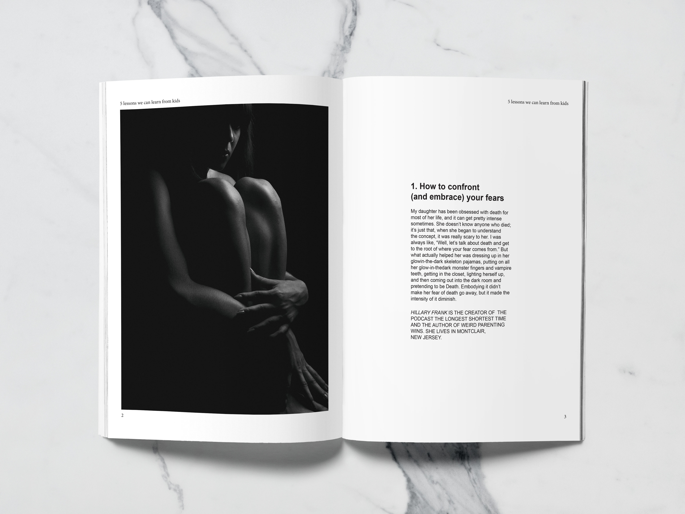
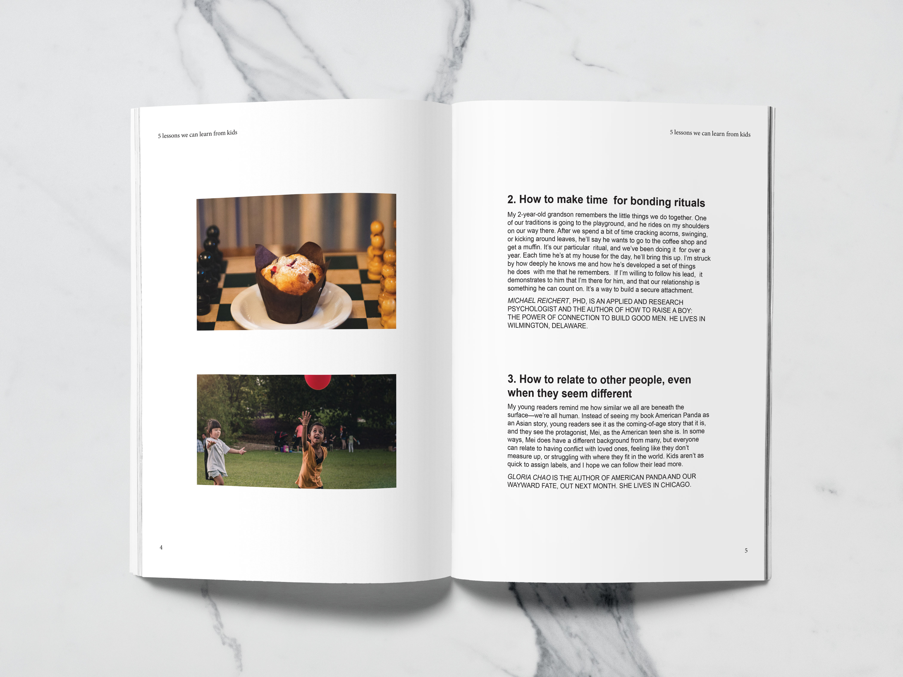
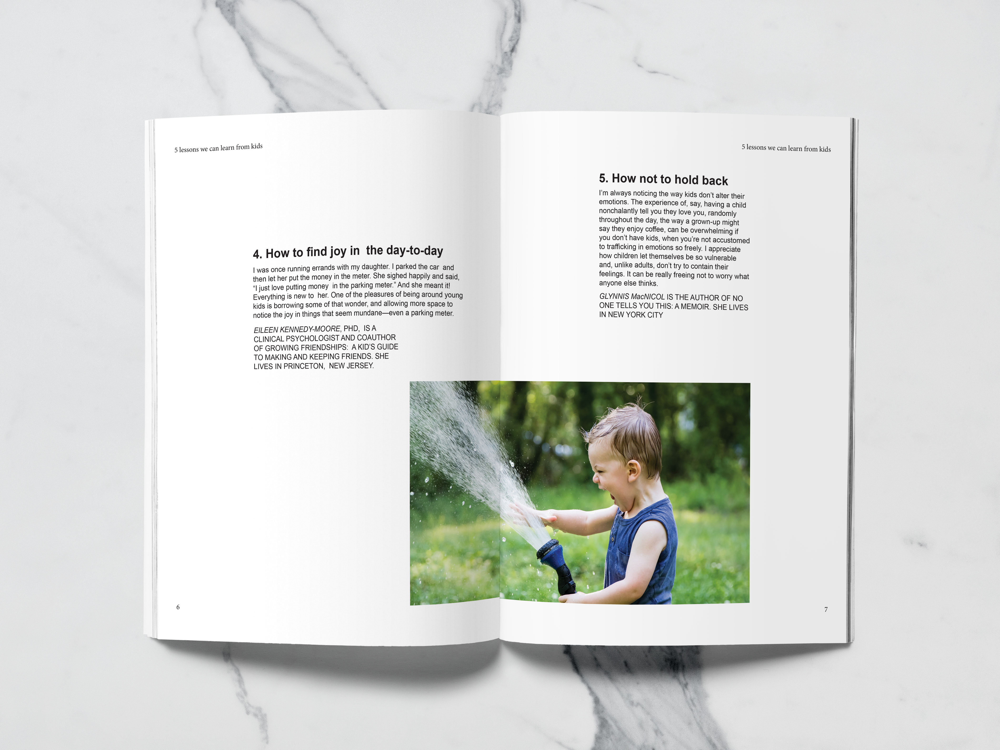

Utilizing the Grid
The goal of the project is to create a grid for a print production. I picked an article from an existing magazine, and I found out it uses three columns grid for that article. Then, I redesign it on three spreads by using 4 * 4 grid.


